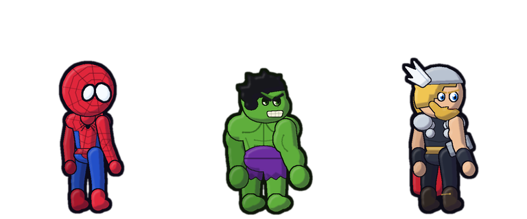

Webling

Meet Your Web Companion
Pick your hero: the web-slinger, the green giant or the thunder warrior. They hang, sway and swing across your webpages. Turn on the Hero Squad and the others stroll along the bottom too.
Anytime, anywhere on any normal webpage
Summon & Interact
Press Alt + Shift + S or click Summon Webling in the toolbar popup to call your hero. Drag Webling anywhere with your mouse or finger, or click him directly to watch him swing!
Focus Patrol Mode
Focus Patrol & Timer
Need to get things done? Launch a Focus session from 1 to 180 minutes. Webling calms down, quiets distractions, keeps a compact floating timer on the page, and celebrates with you when you finish.
Hydration, Spiders & Rewards
Water Goals & Spider Rescues
Track your daily water glasses right from the page or popup. Keep an eye out for crawling tiny spiders to rescue and unlock achievements, custom web lines, themes, and badges!
100% Local & Private
Privacy & Site Controls
Webling never collects analytics, never contacts remote servers, and requires no account. You can hide Webling globally or on specific sites with a single click.